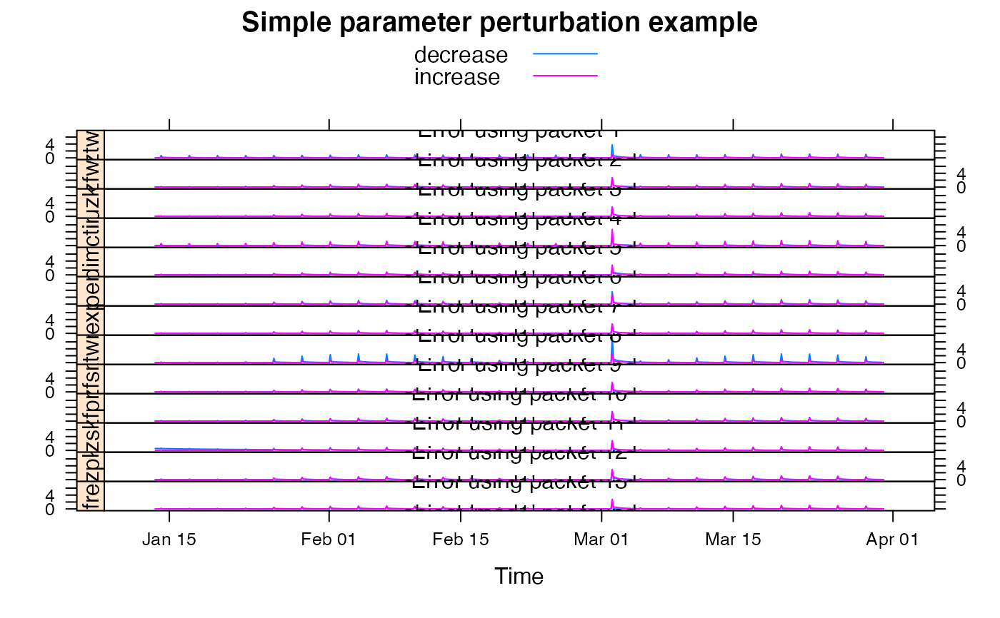

Sacramento Soil Moisture Accounting model. Developed by the US National Weather Service.
sacramento.sim( DATA, uztwm, uzfwm, uzk, pctim, adimp, zperc, rexp, lztwm, lzfsm, lzfpm, lzsk, lzpk, pfree, etmult = 1, dt = 1, uztwc_0 = 0.5, uzfwc_0 = 0.5, lztwc_0 = 0.5, lzfsc_0 = 0.5, lzfpc_0 = 0.5, adimc_0 = 0.5, min_ninc = 20, return_state = FALSE )
Arguments
| DATA | time-series-like object with columns |
|---|---|
| uztwm | Upper zone tension water maximum capacity (mm). |
| uzfwm | Upper zone free water maximum capacity (mm). |
| uzk | Lateral drainage rate of upper zone free water expressed as a fraction of contents per day. |
| pctim | The fraction of the catchment which produces impervious runoff during low flow conditions. |
| adimp | The additional fraction of the catchment which exhibits impervious characteristics when the catchment's tension water requirements are met. |
| zperc | Maximum percolation (from upper zone free water into the lower zone) rate coefficient. |
| rexp | An exponent determining the rate of change of the percolation rate with changing lower zone water contents. |
| lztwm | Lower zone tension water maximum capacity (mm). |
| lzfsm | Lower zone supplemental free water maximum capacity (mm). |
| lzfpm | Lower zone primary free water maximum capacity (mm). |
| lzsk | Lateral drainage rate of lower zone supplemental free water expressed as a fraction of contents per day. |
| lzpk | Lateral drainage rate of lower zone primary free water expressed as a fraction of contents per day. |
| pfree | Direct percolation fraction from upper to lower zone free water (the percentage of percolated water which is available to the lower zone free water aquifers before all lower zone tension water deficiencies are satisfied). |
| etmult | Multiplier applied to |
| dt | Length of each time step in days. |
| uztwc_0 | Initial upper zone tension water contents as proportion of
|
| uzfwc_0 | Initial upper zone free water content as proportion of
|
| lztwc_0 | Initial lower zone tension water content as proportion of
|
| lzfsc_0 | Initial lower zone free water secondary as proportion of
|
| lzfpc_0 | Initial lower zone free water primary as proportion of
|
| adimc_0 | Initial additional impervious flow store, as proportion of
|
| min_ninc | Minimum number of inner iterations. This is a simple attempt to improve numerical stability. See Details. |
| return_state | to return time series of each state variable and flow component |
Value
the simulated effective rainfall (“total channel inflow”), a time series of the same length as the input series.
if return_state=TRUE, a list with components:
Upper zone tension water content
Upper zone free water content
Lower zone tension water content
Lower zone free secondary water content
Lower zone free primary water content
Tension water contents of the additional impervious area
Cumulative total evapotranspiration
Cumulative evapotranspiration from upper zone tension water
Cumulative evapotranspiration from lower zone tension water
Cumulative evapotranspiration
Cumulative evapotranspiration from riparian zone
Runoff from impervious area
Six hour sum of runoff (?)
Surface runoff
Interflow
Primary baseflow
Secondary baseflow
Channel baseflow (bfp+bfs)
Details
This description of the model is given by Burnash (1995):
“The moisture accounting system utilized in the Sacramento Catchment Model is a carefully structured representation of the catchment's soil moisture storage system. It is based on using simple approximations of many of those soil moisture processes which have been reported in the hydrologic literature. The authors have organised these approximations in a manner which would allow the determination of many catchment characteristics from carefully selected portions of the catchment's hydrologic record. Inasmuch as many of the catchment characteristics are related to the soil moisture capabilities of the catchment, an intelligent application of the model start with a good understanding of the three basic types of soil moisture which can potentially influence catchment runoff conditions. These soil moisture types are: (1) Hygroscopic Water, (2) Tension Water and (3) Free Water. ”
[...]
“Streamflow as computed by the Sacramento Catchment Model is the result of processing precipiatation through an algorithm representing the uppermost soil mantle identified as the upper zone and a deeper portion of the soil mantle or lower zone. The algorithm computes runoff in five basic forms. These are (1) direct runoff from permanant and temporary impervious areas, (2) surface runoff due to precipitation occurring at a rate faster than percolation and interflow can take place when both upper zone storages are full, (3) interflow resulting from the lateral drainage of a temporary free water storage, (4) supplemental base flow, and (5) primary base flow.” (Burnash, 1995)
The default parameter ranges were taken from Blasone et. al. (2008).
Note that the Sacramento model potentially suffers from numerical
instabilities, which can be seen for example as discontinuities in output
and derivatives of outputs (see Hendrickson et al. 1988). Ideally, the
underlying differential equations of the model would be solved using a
numerically robust timestepping scheme (see Clark & Kavetski 2010). The
hydromad package makes use of an existing implementation. To help remedy the
numerical instability, the argument min_ninc has been added, which
defines the minimum number of inner loops used within each timestep. The
user is encouraged to test the effect of increasing min_ninc on their
dataset.
References
Burnash, R.J.C (1995). The NWS River Forecast System -- Catchment Modeling. In: Vijay P. Singh (ed.), Computer models of watershed hydrology. Revised edition, Highlands Ranch, Colo. : Water Resources Publications, c1995. http://www.wrpllc.com/books/cmwh.html.
Blasone, R., J.A. Vrugt, H. Madsen, D. Rosbjerg, B.A. Robinson, G.A. Zyvoloski (2008). Generalized likelihood uncertainty estimation (GLUE) using adaptive Markov Chain Monte Carlo sampling. Advances in Water Resources 31, pp. 630-648.
Hendrickson, Jene' D., Soroosh Sorooshian, and Larry E. Brazil (1988) Comparison of Newton-Type and Direct Search Algorithms for Calibration of Conceptual Rainfall-Runoff Models. Water Resources Research 24 (5): 691-700. http://dx.doi.org/10.1029/WR024i005p00691
Clark, Martyn P., and Dmitri Kavetski (2010) Ancient Numerical Daemons of Conceptual Hydrological Modeling: 1. Fidelity and Efficiency of Time Stepping Schemes.” Water Resources Research 46 (10). http://dx.doi.org/10.1029/2009WR008894
See also
hydromad(sma = "sacramento") to work with models as
objects (recommended).
Author
Felix Andrews felix@nfrac.org and Joseph Guillaume, based on code from the University of Arizona MOSCEM project
Examples
#> List of 1 #> $ sacramento:List of 13 #> ..$ uztwm: num [1:2] 1 150 #> ..$ uzfwm: num [1:2] 1 150 #> ..$ uzk : num [1:2] 0.1 0.5 #> ..$ pctim: num [1:2] 1e-06 1e-01 #> ..$ adimp: num [1:2] 0 0.4 #> ..$ zperc: num [1:2] 1 250 #> ..$ rexp : num [1:2] 0 5 #> ..$ lztwm: num [1:2] 1 500 #> ..$ lzfsm: num [1:2] 1 1000 #> ..$ lzfpm: num [1:2] 1 1000 #> ..$ lzsk : num [1:2] 0.01 0.25 #> ..$ lzpk : num [1:2] 0.0001 0.25 #> ..$ pfree: num [1:2] 0 0.6#> #> Hydromad model with "sacramento" SMA and NULL routing: #> Start = 2000-01-01, End = 2000-03-31 #> #> SMA Parameters: #> lower upper #> uztwm 1e+00 150.00 #> uzfwm 1e+00 150.00 #> uzk 1e-01 0.50 #> pctim 1e-06 0.10 #> adimp 0e+00 0.40 #> zperc 1e+00 250.00 #> rexp 0e+00 5.00 #> lztwm 1e+00 500.00 #> lzfsm 1e+00 1000.00 #> lzfpm 1e+00 1000.00 #> lzsk 1e-02 0.25 #> lzpk 1e-04 0.25 #> pfree 0e+00 0.60## simulate with some arbitrary parameter values set.seed(2) mod1 <- simulate(update(mod0, etmult = 0.01), 1, sampletype = "random" )[[1]] testQ <- predict(mod1, return_state = TRUE) xyplot(window(cbind(HydroTestData[, 1:2], sacramento = testQ), start = 100))mod1#> #> Hydromad model with "sacramento" SMA and NULL routing: #> Start = 2000-01-01, End = 2000-03-31 #> #> SMA Parameters: #> uztwm uzfwm uzk pctim adimp zperc rexp #> 28.54746 105.65373 0.32933 0.01681 0.37754 235.92526 0.64579 #> lztwm lzfsm lzfpm lzsk lzpk pfree etmult #> 416.89100 468.55050 550.43380 0.14264 0.05980 0.45631 0.01000## show effect of increase/decrease in each parameter parRanges <- hydromad.getOption("sacramento") parsims <- mapply( val = parRanges, nm = names(parRanges), FUN = function(val, nm) { lopar <- min(val) hipar <- max(val) names(lopar) <- names(hipar) <- nm fitted(runlist( decrease = update(mod1, newpars = lopar), increase = update(mod1, newpars = hipar) )) }, SIMPLIFY = FALSE ) xyplot.list(parsims, superpose = TRUE, layout = c(1, NA), strip = FALSE, strip.left = TRUE, main = "Simple parameter perturbation example" ) + latticeExtra::layer(panel.lines(fitted(mod1), col = "grey", lwd = 2))